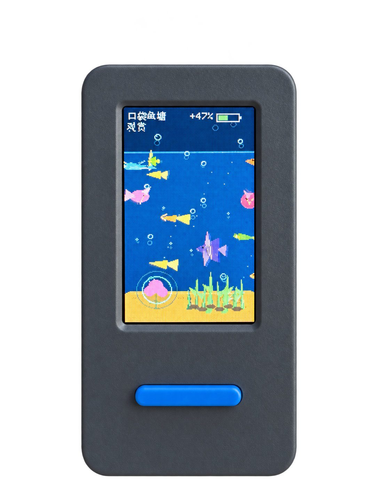

莫秀文 · Xiuwen Mo
AI 产品 × 人机交互
我关注人与智能系统如何协作，也喜欢把复杂的问题，整理成清楚、可使用的体验。
过去两年，我参与工业 AI 产品的业务梳理与方案设计，接触最多的是数据处理和质量分析中的实际问题。一个任务怎样开始，系统的处理过程怎样被理解，结果怎样被核对，以及哪些步骤需要人来决定，都是我在设计中反复思考的事情。
我习惯先弄清目标，再梳理流程、组织信息，最后细化交互与视觉。相比只把页面完成，我更希望理解每个设计选择的原因，也能把它向别人解释清楚。
现在，我也通过独立 AI 项目，实践需求定义、原型制作与功能验证，并持续学习人机交互。把一个想法做出来，再观察它实际运行的样子，是我愿意持续投入的过程。
我的工具栈
- Figma
 GPT
GPT- Codex
- Claude
 DeepSeek Harness
DeepSeek Harness- Obsidian
我怎样做事
先弄清楚，要解决什么
面对一个模糊的需求，我会先梳理使用者、任务和业务流程：人想完成什么，现在卡在哪里，哪些信息会影响判断。先把问题说清楚，再决定页面上需要出现什么。
把流程和决定权安排好
在 AI 产品中，我尤其关注人和系统各自负责什么。哪些重复步骤可以自动处理，哪些结果需要提供依据，什么时候应该停下来让人确认。这些安排会直接影响交互结构，而不只是按钮和提示语。
用原型检验想法
我会通过交互原型和 AI 辅助实现，把方案推进到可以操作、可以检查的程度。沿着实际流程走一遍，往往能发现静态页面里不容易看见的问题，再据此调整信息、状态和操作方式。
和 AI 一起，把想法做出来
除了工作中的项目，我也做一些自己的 AI 实践。它们让我有机会从一个想法出发，尝试定义需求、组织功能，并把原型逐步推进到能够运行。
AI 帮我缩短了从想法到原型之间的距离，也让我更直接地面对实现中的细节：需求是否说清楚了，功能之间能否接上，出现异常时该怎样处理。能生成一个结果只是开始，后面还需要不断检查和调整。
个人网站
这个网站也是我的一项持续实践。我借助 AI，把项目、经历和个人创作组织成一个可以浏览的空间，并在实际阅读中反复调整信息层级、导航和展示方式。
个人实践项目
一个把个人兴趣转成可交互体验的独立项目。我借助 AI 推进原型制作与功能验证，也在过程中练习把一个模糊的想法，拆成可以逐步实现的内容。
AI 使用概览
记录真实使用，数据接入后逐步补全。
正在读取历史本地汇总，— 表示未知。
数据覆盖说明
热图另接入 Claude 历史日汇总：2026-07-27—2026-09-20，共26个记录日、1,305,617,793 Token；分项及模型合计已核对，生成工具版本与时区未记录，未审计源日志。比旧 Claude 快照多201,421 Token，差异原因未确定；此日表只用于热图，不再加入左侧历史累计。Codex 与 Claude 按原导出日期汇合，未做跨源请求去重，日期缺失仍为未知；这不是完整账户或同一时区的精确用量。
仅展示已核对的手动聚合数据，不自动读取聊天记录。各工具分别统计；缺失日期不代表没有使用。
输入、输出与缓存分别列示，不将会话数合并为协作次数。Codex 展示已记录日期的 Token 小计，不补齐缺失日期，也不代表账户完整用量。Claude Code 与 DeepSeek Harness 暂缺可靠独立汇总；原汇总未提供请求计数；模型按原记录的 Token 排序，含部分 fallback 推定标记，不代表请求次数。
另有旧统计快照（记录更新时间：2026-10-25 20:49，时区未记录）：Claude Code 1,305,416,372 Token，DeepSeek Harness 234,207,819 Token。两者模型分项与旧合计相等，但没有分源日期及输入/输出/缓存分项，旧采集去重未审计；固定历史累计仅将三份已收集记录做算术相加，未做跨来源去重，不代表完整生命周期或费用；这些快照不参与年/月/日筛选。
我的经历
2024.08—2026.08
上海电气中央研究院｜UI/UX 设计师（派遣）
参与工业智能语义基座与 D4S 业财一体化等企业产品设计，围绕工业 AI 数据处理、质量分析及项目财务协作，梳理需求、业务流程与信息架构，细化交互、视觉和原型方案。与业务、产品、算法及研发协作，通过原型验证和方案评审明确实现边界、交付要求与验收标准，将人工确认、过程反馈和结果核对落实到具体界面。
展开收起
工业 AI 方案涉及 AI 数据管道、质量 Agent 与沙盘推演，重点梳理任务步骤、分析报告与人工确认入口。D4S 设计覆盖配置、项目与财务角色，串联项目创建、预算匹配、经费执行及任务交付，细化分步表单、项目层级与费用信息。
2021.12—2024.03
河南易元科技｜高级 UI 设计
参与政务、社会治理与矛盾调解等产品设计，覆盖可视化大屏、Web、App 和小程序。围绕社会治理综合平台与领导驾驶舱，将业务流程和多角色任务转化为信息结构及界面方案，梳理重点指标、数据展示方式与操作层级，完成大屏视觉布局、多端流程和界面规范设计，兼顾不同使用场景下的信息阅读与交互一致性。
2016.07—2019.02
中延实业 / 云之渠｜UI 设计师
参与移动端与 Web 产品的视觉、交互及界面规范设计。根据产品需求细化界面结构和操作流程，与开发沟通并优化体验。
2011—2015
洛阳师范学院｜艺术设计本科

工作之外，好奇心也走出屏幕
我喜欢画画，也参与花艺创作。一个是在纸上安排颜色与形状，一个是在真实空间里调整花材、层次和人的视线。材料不同，但都需要观察，也都需要亲手试一试。
我也对硬件和新的创作工具保持好奇。遇到感兴趣的东西，常常会想知道它是怎样工作的，自己又能用它做些什么。
对我来说，这些事情有一个相通的地方：
把一个模糊的想法，慢慢变成别人能看见、使用和感受到的体验。一个发生在屏幕里，一个发生在真实空间里。